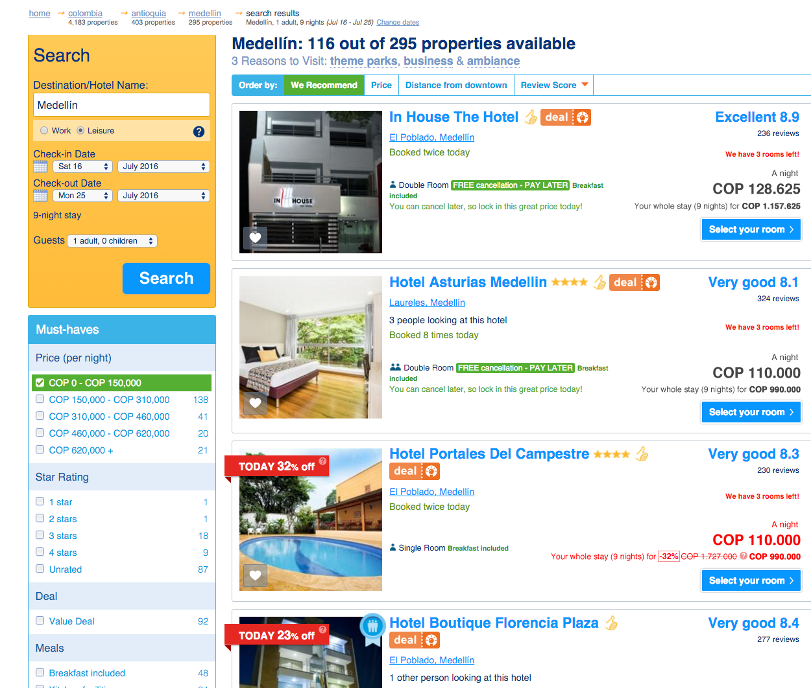
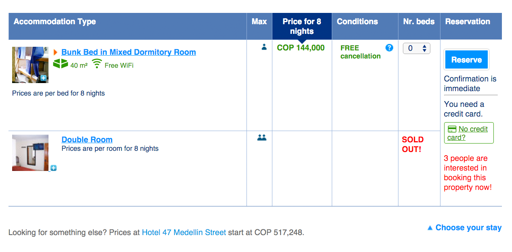
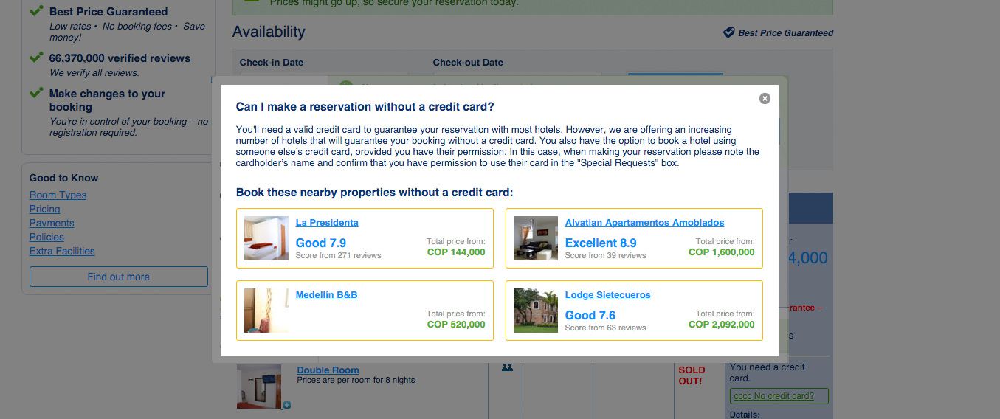

Ana Cristina Patiño - November 7th
I was asked to suggest at least two changes for booking.com website, and I wanted to follow the data-driven approach, booking as a company follows, of course using the resources and time at hand. The way this data-driven thinking can also be interpreted, it's to think that you should always try to resist the temptation of making decisions trusting in your mere intuition.
Because of this, I wanted to conduct a short qualitative research, this in hopes to detect any pain points and suggest improvements to ease user's experience in the site, which potentially will affect positively the company's macro goal, in this case, a higher number of bookings.
When looking for participants I wanted to focus on behaviors rather than demographics. The test was made with one woman and two men, they’re between 33 and 23 years old, middle to high income and all three of them Colombian. This might seem relevant to the test but what I tried to find in the participants, were behaviors and characteristics that matched the potential booking.com customer. With this I refer that for example, they have booked flights and hotel rooms online in the past, they all travel out of the country at least once a year, they are used to online transactions in the daily basis and because of this, they are likely to use the website in the future.
Because the videos are in Spanish, I list here the overall indications given to the users so you can have a better context of what's happening:
Try to imagine you're alone in the room, but you can ask any question that you feel is blocking you from continuing with the test.
There are not wrong or right answers; we're testing the software, not testing you.
Speak your mind, verbalize your thoughts so we can understand the way and what you're thinking.
Be as candid as possible, I was not involved in the design of this software and I won't be offended by what you say.
Lastly I tried to explain to the user what the recording software (Camtasia) is for, what it does and how the recording will be used.
For the purpose of the exercise, the users were asked to assume they were going in a trip to Medellín, between July 16th and 25th. They were asked to book a hotel for these nights, their budget per night it's a maximum of 150.000 Colombian pesos, and they should choose the said hotel with the criteria they usually use.
Because they've never used the website in the past, they should start the session from scratch creating an account in the process.
I wanted to find patterns in all three different cases but because of the reduced number of tests I would like to focus only in three things, I consider, are problems. In the video, users, talk about couple of other things but I believe the narrower we focus the efforts, the better results. This is also why I wanted to explore a small part of the website.
In the second and third video, when the user has applied the budget filter to the search, you will see how they have problems finding a hotel that's between the price range given.
The reason behind it seems to be that, in the list, the price it’s displayed as a total of the nights they're staying in the hotel, instead of the price per night, it will be difficult to tell whether if it's more common for people to think of a budget per day or in total, but what I think the system can do it's to provide both options as clear as possible.
Most important, if you look at the filter on the right, you will see that it's set by price per night, but the results are the price per night multiplied by the number of nights.
It's important to talk to the user in the same language and using the same data all the time, we must avoid, in this case, switching from one total to another; this is also because not offering both totals in the results, forces the user to do the math in case they want the price per night.
We can see why the participants don't immediately find what they're looking for, this is because after using the filter to indicate each night should be below 150.000 Colombian pesos, they get results with totals that don't correspond to the filter, even with the small dialog box saying that's the total for the complete stay, it doesn't indicates how much it is for the night, this at first glance, seem to lead them to think, the big number corresponds to that price they’re filtering the results for; in the minute 2:20 in the third video, the user points out how expensive hotels are in Medellín, since he thinks the number it's the price per night in each hotel.
A possible solution:
It seems that having a credit card it's very common in other countries, but for various reasons in Colombia it is not, thus the success of sites like Mercadolibre or OLX, where a credit card it's not required. Myself I was only able to get one two years ago, and I've been traveling very frequently for way longer than that, as an example of this, during the test I discovered none of the participants had a credit card either. This of course could be a coincidence, but I believe given the scenario in Colombia, it should be important to adapt the credit card requirement to make it user-friendlier.
In the process of booking a hotel, the participants realized too late that a credit card was necessary to make the reservation, and they had to start the whole process again.
As Steve Krug mentioned in Don’t Make Me Think, users have a very short reservoir of goodwill, and each time we ask them to repeat an action the reservoir diminishes. It will be better, specially in the case of Colombia, that we warn the users the fact that they need a credit card to make a reservation in a particular hotel, and not only inform them when they don’t need it, two of the three participants suggested it.
It’s understandable the majority of hotels do required the credit card and, by providing this information upfront could potentially scare users away, but this can be mitigated by also moving the suggestion of using someone else’s next to the credit card requirement.
As a conclusion, the requirement it’s comprehensible and even common, the problem with it, it’s how deep into the process it’s placed and how it can make the user feel the website made him waste his time by not providing this information sooner.
As mentioned, a possible solution could be to move the requirement in the overview of the hotel, if we place it in the search results it's possible the user won't even bother to take a look at the hotel, but once inside the hotel, he at least got to see more pictures and know a little bit more about the hotel but hasn't yet started the booking process so he won't feel his time was wasted.
 This is a direct consequence of the previous issue. When the user discovers the hotel he originally tried to book, needs a credit card, he starts the reservation process again, in which he’s asked to complete a form with his personal information again.
Once again, repeating an action increases the level of frustration and decreases the goodwill reservoir in him, this is important because in the process of entering the information twice, some data can be lost.
A good example of this it’s in the first video, where the first participant fills the form for the first time, she adds an additional note asking for a non smoking room, the second time she forgets about it.
It’s stated in an alert that by leaving the page the data in the form will be lost, but although I ignore the reasons behind this behavior, it’s evident that asking to perform again this action frustrates and affects the user’s booking experience.
One last interesting fact to keep in mind, it's how the success rate of this task is being affected by having to repeat the task at hand. if we calculate this rate by dividing the number of correctly completed tasks by the number of attempts, we will discover that this is going to be lowered by half, decreasing dramatically the positive results of our KIPs.
A possible solution to this would be simply to keep the data and auto fill the fields, this for the user to update or edit if it's required.